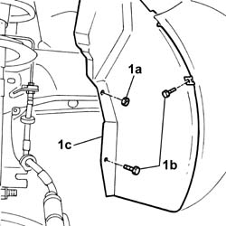
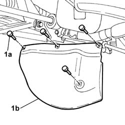
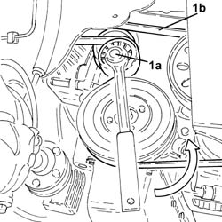

1092G11 Engine components single drive BELT - R.R. for versions with air conditioning
- Path
- Procedures > 10 ENGINE UNIT > 1092 VARIOUS ENGINE COMPONENT CONTROLS > 1092G single drive belt for various engine components > 1092G11 Engine components single drive BELT - R.R. for versions with air conditioning
- Kind
- repair procedure (removal / refitting; the operation number is the code)
- Applies to
- engines: 1.3 JTD 16v; all production periods
- Interactive page
- https://sloeber94.github.io/elrnDB-fPnd/en/#/2752641
Applies to: engines: 1.3 JTD 16v; all production periods
 Removing
Removing
 Refitting
RefittingRemove the car from the ramps.
4450B04 right front wheel r r .
1. Undo the fixing nut (1a) and the fixing bolts (1b) and move the wheel arch liner (1c) aside.

Applies to: engines: 1.3 JTD 16v; all production periods
1. Undo the fixing bolts (1a) and remove the timing dust guard (1b).

Applies to: engines: 1.3 JTD 16v; all production periods
1. Use a spanner on the moving tensioner (1a) and remove the engine components single drive belt (1b).

Applies to: engines: 1.3 JTD 16v; all production periods
Refitting
RemovingAdjust the moving tensioner and fit the engine components single drive belt using a spanner.
Fit the timing gear dust guard in place and tighten the fixing bolts.
Tighten the bolts and the nut fixing the wheel arch liner.
4450B04 right front wheel r r .
Remove the car from the ramps.
Topics linked from this page (1)
Topics that link to this page (20)
- 1016B10 single cylinder head extension - change gasket
- 1020B12 CHAIN-DRIVE VALVE GEAR COVER - R.R. AND GASKET REPLACEMENT FOR MODELS WITH AIR-CONDITIONER
- 1020B30 timing system cover oil seal - replace
- 1028H11 piston connecting rod set - r r
- 1032A12 CHAIN AND GEARS for timing system - R.R. for timing or Replacement.
- 1032B47 toothed drive pulley - r r for versions with air conditioner
- 1032B62 a/c duct pulley - r r
- 1032C40 Timing CHAIN TENSIONER PLATE - R.R.
- 1036H57 hydraulic tappets all r r
- 1036L10 camshafts in cylinder head extension - r r - includes cylinder head extension replacement if necessary
- 1084B16 engine oil pump - r+r vehicles with a/c
- 1084B26 emgine oil intake duct - r r
- 1084B45 RIGID air supply PIPE between air-air heat exchanger and intermediate hose - R.R.
- 1088C12 water pump - r+r for versions with air conditioner
- 1092A12 crankshaft pulley - r+r for versions with air conditioner
- 1092A14 Pulley support FLANGE on crankshaft - R.R.
- 1092G16 Engine components single drive belt MOVING TENSIONER - R.R. for versions with air conditioning
- 5040A20 air conditioner compressor - r+r - includes fluid level check and top up if necessary
- 5530A14 alternator - r+r for versions with air conditioner
- 5530A40 alternator brackets/mount/spacer - r r